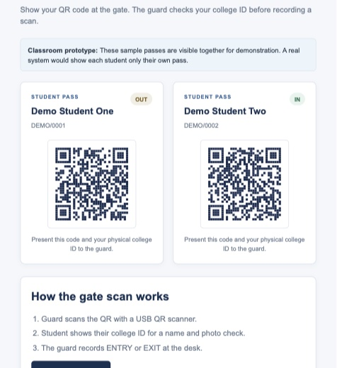
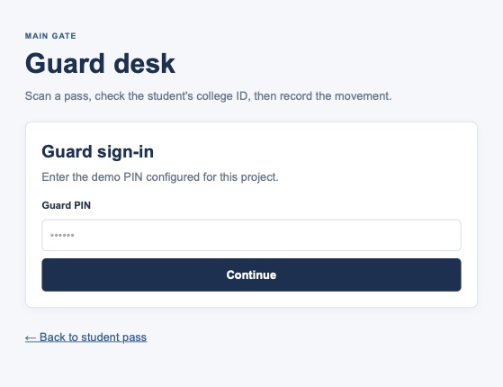

Students present a QR pass at the gate. A guard checks the student's physical college ID, records an entry or exit, and the system updates the gate status and keeps a scan log.


BTECH STUDENT · SOUTH ASIAN UNIVERSITY
Hey, I’m Yajat Nanda, a BTech student at South Asian University. I enjoy learning by building useful things, especially projects that make everyday campus experiences simpler.
SELECTED PROJECTS
A PHP and MySQL prototype for student gate passes and guard check-ins.
Students present a QR pass at the gate. A guard checks the student's physical college ID, records an entry or exit, and the system updates the gate status and keeps a scan log.


A LITTLE ABOUT ME
I’m Yajat Nanda, a BTech student at South Asian University. I’m curious about how technology can solve practical problems, and I like learning by turning ideas into working projects. CampusPass Gate Pass is one example: a PHP and MySQL prototype where QR passes support student check-in and a guard records campus entry and exit after checking a college ID.
I’m building my skills through coursework and hands-on projects. I’m especially interested in web development, databases, and creating straightforward tools people can use in everyday life.
HAVE A GOOD ONE IN MIND?
Get in touch about projects, collaboration, or opportunities to learn and build together.
jajat3nanda@gmail.com ↗